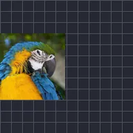

Lượng tử hóa thời gian

Làm lớp này chuyển động ở tốc độ khung hình thấp hơn, giống như cảnh quay bị giật hoặc stop-motion.
Lượng tử hóa thời gian: làm cho lớp di chuyển ở tốc độ khung hình thấp hơn, tạo cảm giác giật, stop-motion. Nó hoạt động trên video, hình dạng, văn bản và nhóm. Đặt số khung hình mỗi giây mà lớp sẽ hiển thị: số càng thấp, chuyển động càng giật.
- 8 đến 12 khung hình mỗi giây tạo cảm giác vẽ tay, stop-motion.
- Tạo hiệu ứng cho số để chuyển đổi mượt mà giữa chuyển động giật và mượt.
- Đặt hiệu ứng lên một nhóm để làm cho mọi thứ bên trong nó giật cùng nhau.
Cài đặt
| Cài đặt | Loại | Phạm vi | Mặc định |
|---|---|---|---|
| Bước/giây | Số | 0.1 đến 120 | 5 |
| Kiểu | Lựa chọn | Cổ điển, Tiêu chuẩn | Tiêu chuẩn |